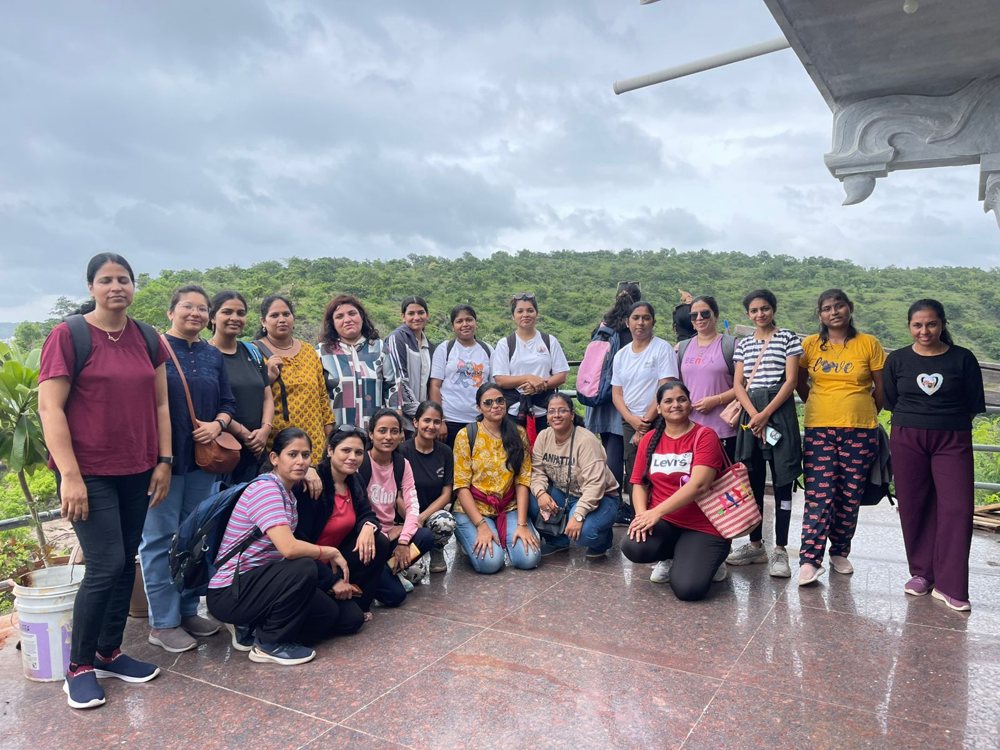

📸 Gallery



Practice Yoga. Live Healthy. Stay Calm.
Aroma Yoga Centre is dedicated to spreading health, discipline, and positive living through traditional yoga practices. Along with regular yoga classes, we actively organize and participate in social and wellness activities such as essay writing competitions, tree plantation drives, 108 Surya Namaskar events, Garba participation, marathons, and trekking programs.
The centre is led by Priyanka Raut, a passionate and dedicated yoga trainer who teaches authentic traditional yoga. Her teaching focuses on correct postures, breathing techniques, and mindfulness to help students achieve physical fitness and mental peace.
All sessions at Aroma Yoga Centre are guided by experienced trainer Priyanka Raut, focusing on authentic traditional yoga for holistic well-being.
Traditional daily yoga sessions focusing on flexibility, strength, posture, balance, and overall physical fitness through regular practice.
Convenient batch timings suitable for students, professionals, and homemakers to maintain a consistent yoga routine.
Calm meditation and relaxation practices to reduce stress, improve focus, enhance mental clarity, and promote inner peace.
Guided breathing techniques that improve lung capacity, boost immunity, increase energy, and control stress.
Beginner-friendly sessions with step-by-step guidance, focusing on basic postures, breathing, and safe practice.
Special yoga practices designed to relax muscles, calm the nervous system, and release mental and physical stress.
Motivating group sessions that build discipline, consistency, and positive energy through collective practice.
I did face yoga in 21 day . I really thank to "Aroma yoga centre" bcz priyanka mam took breathing exercises, massage techniques, lymphatic drainage, head massage,how to prepare detox water etc.and very imp teaching techniques step by step superb. Sessions made me feel relaxed and calm. I recommend this to join.
Hi there... Sonal here... Joined Aroma Yoga Centre a year back and this has helped me a lot in increasing my weight,my posture and confidence level too. Priyanka Madam has taught us Face Yoga which has improved in my skin texture Love to do trekking with the team and lots of excercise in the park. Thanks Priyanka Madam for all the positive changes 😊😊
At Aroma Yoga the focus is not only on just Aasanas but on stamina, perseverance, strenth, capacity building etc. The best part is it teaches healthy lifestyle, food habits which are very beneficial along with Yoga. Thanks to Priyanka mam for cooperation and support.
Maza yoga class khup khup happy place for my life n my yoga teacher is very very sweet n very good teaching for yoga my teacher it's my soul mate friend TQ for God ty mala bhetlya TQ very much dear Priyanka ma'am
It's an very beneficial and relaxing course, This made me more engrossed in the aasanas.I have been more flexible since I joined the yoga class. lt's fun learning a new aasan everyday. I really enjoyed doing yoga with Priyanka mam and all the members of the batch. A very big thanks to mam for teaching all the Asanas with proper steps 🙏 Thank you! Priyanka mam .
Amazing experience at "Aroma Yoga Center" Priyanka Ma’am is a dedicated teacher who makes yoga simple and effective for everyone. A special mention to Priyanka Ma’am, who is an exceptional yoga teacher. She is patient, knowledgeable, and always ensures that every student—whether beginner or advanced—gets personal attention. Her way of teaching is very motivating and encouraging, and she explains not only the postures but also their benefits in daily life. Priyanka Ma’am teaches with patience and gives personal attention. Every day feels relaxing and energizing now.Thankyou very much Mam❤️ you're the perfect yoga teacher 🌟💖🧘🏻♀️
It has been 2 years since I joined Aroma Yoga Center. It feels great to start the morning with yoga.. Thanks to yoga, I have lost weight and my body feels lighter and fitter. Earlier I used to feel tired and sluggish, but now my energy and enthusiasm have increased.
Good morning ma'am, Awesome experience at "Aroma Yoga centre" i really enjoyed the Yoga class.. Thanks to Priyanka ma'am, as she is a good mentor as well a knowledgeable and dedicated teacher who makes yoga simple and effective for everyone..I left feeling more flexible, energized and mindful.Tha class has a good balance of strength, stretching and relaxation.Priyanka ma'am encouraging and provided clear guidance on each pose,which made it easy to overall, it was a refreshing and beneficial experience,and I look forward to attending more classes.. finally want to say great teacher with deep knowledge in Yoga..
priyankavikasraut@gmail.com
+91 7798081007
Vijayraj heritage, 60 Feet Rd, Pimple Gurav, Pune.